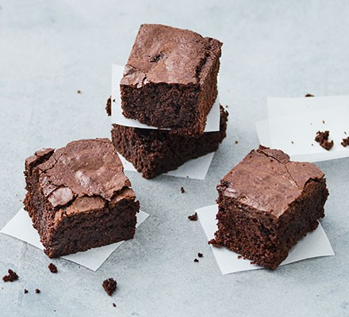

Vegan Brownies

Description
These vegan brownies are rich, fudgy, and irresistibly chocolatey, made without any animal products. Perfect for satisfying your sweet tooth, these brownies are easy to make and a hit at any gathering. With a dense, moist texture and a deep chocolate flavor, they’ll become your go-to vegan dessert.
Indulge in a guilt-free treat that’s not only delicious but also kind to the planet and animals.
Ingredients
- 1 cup (125 g) all-purpose flour
- 1 cup (200 g) granulated sugar
- 1/2 cup (60 g) cocoa powder (unsweetened)
- 1/2 tsp baking powder
- 1/2 tsp salt
- 1/2 cup (120 ml) vegetable oil or melted coconut oil
- 1/2 cup (120 ml) plant-based milk (such as almond, oat, or soy)
- 1 tsp vanilla extract
- 1/2 cup (90 g) vegan chocolate chips or chopped dark chocolate
- Optional: 1/4 cup (30 g) chopped nuts (like walnuts or almonds)
<
Steps
- Preheat the oven:
Preheat your oven to 180°C (350°F) and line an 8x8-inch (20x20 cm) baking pan with parchment paper or lightly grease it.
- Mix the dry ingredients:
In a large mixing bowl, whisk together the flour, sugar, cocoa powder, baking powder, and salt until well combined.
- Add the wet ingredients:
Make a well in the center of the dry ingredients and pour in the vegetable oil, plant-based milk, and vanilla extract. Stir until the batter is smooth and no dry spots remain.
- Fold in chocolate chips and nuts:
Gently fold in the vegan chocolate chips and, if desired, the chopped nuts for added texture.
- Bake the brownies:
Pour the batter into the prepared baking pan, spreading it out evenly. Bake in the preheated oven for 25-30 minutes, or until a toothpick inserted in the center comes out with a few moist crumbs (not wet batter).
- Cool and serve:
Allow the brownies to cool in the pan for at least 15 minutes before transferring them to a wire rack to cool completely. Slice into squares and enjoy!